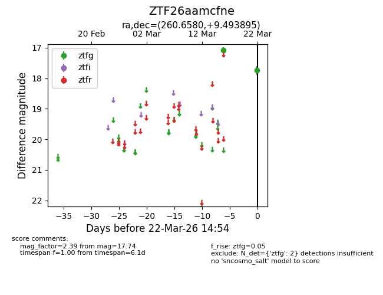
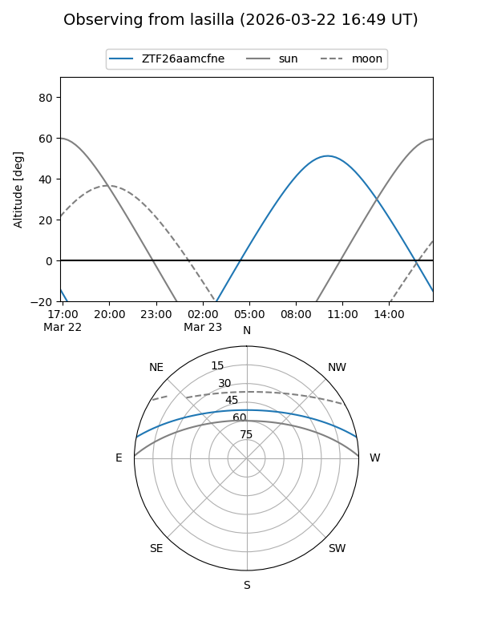
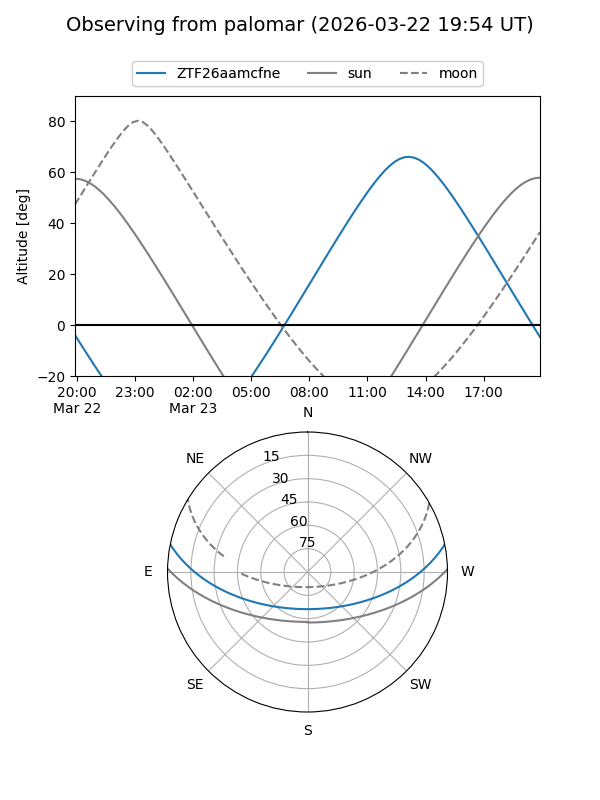

ZTF26aamcfne
Target ZTF26aamcfne at 2026-03-22 14:56
Aliases and brokers:
FINK: link
Lasair: link
ALeRCE: link
alt names
ZTF26aamcfne (ztf,fink_ztf)
Coordinates:
equatorial (ra, dec) = 260.6580,+9.49390
equatorial (HMS+DMS) = 17:22:37.92,+09:29:38.02
galactic (l, b) = (31.4802,+24.01024)
Flags:
Photometry:
last ztfg=17.74
2 ztfg detections
Lightcurve

Visibility


Additional plots